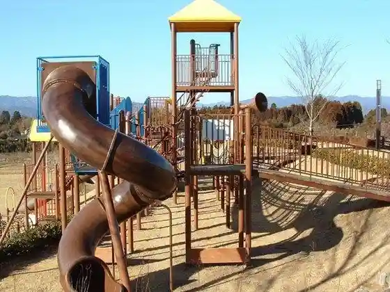

Nishiki Town Onsen Center
Nishiki, Kumamoto · 0966-38-2074 · Official / source link
Ichifusa Shokudo
Nishiki, Kumamoto · 0966-38-0071 · Official / source link
Farmer’s Cafe SAKURI (Sakuri)
Nishiki, Kumamoto · 0966-38-0390 · Official / source link
Nishiki Kurando Park
Nishiki, Kumamoto · 0966-38-4419 · Official / source link

Tsuchiya Kannon
Nishiki, Kumamoto · 0966-38-4419 · Official / source link
Roku Choshi Shuzo
Nishiki, Kumamoto · 0966-38-1130 · Official / source link
Joraku Shuzo
Nishiki, Kumamoto · 0966-38-4371 · Official / source link
to Sho Kama
Nishiki, Kumamoto · 0966-38-4419 · Official / source link
Yama no Naka no Kaigun no Town Nishiki Himitsu Kichi Museum (Hitoyoshi Kaigun Koku Kichiato)
Nishiki, Kumamoto · 0966-28-8080 · Official / source link
Shingu Zendera Shingu Tera Roku Kannon
Nishiki, Kumamoto · 0966-38-0251 · Official / source link
Hitoyoshi Kuma no Zakka to Kissa Kuma Zen Kokoro Seikatsu
Nishiki, Kumamoto · 0966-38-0358 · Official / source link
Tsuten no Yu Campground
Nishiki, Kumamoto · 080-8368-7616 · Official / source link
Kimoto Shrine
Nishiki, Kumamoto · Official / source link
Iwa Castle Ruins
Nishiki, Kumamoto · Official / source link
Arata Daio Shrine
Nishiki, Kumamoto · Official / source link
Arata Kannon Do no Shaka Nyorai Zo
Nishiki, Kumamoto · Official / source link
Tai Sha Ryu Kenpo
Nishiki, Kumamoto · Official / source link